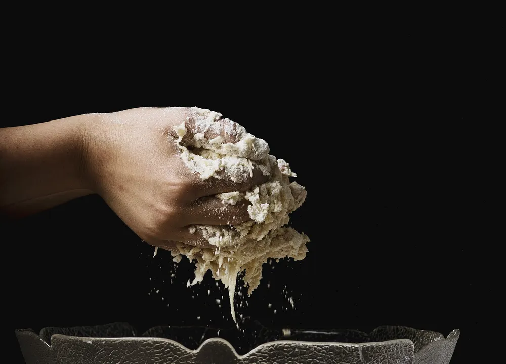
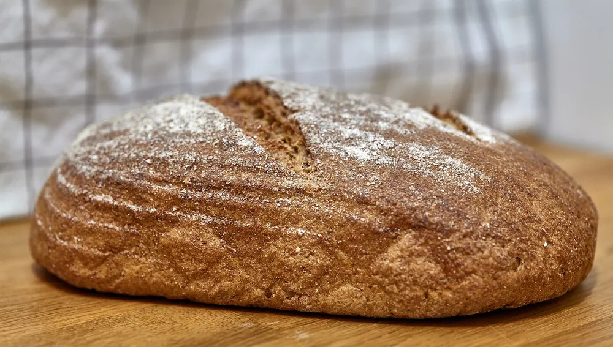
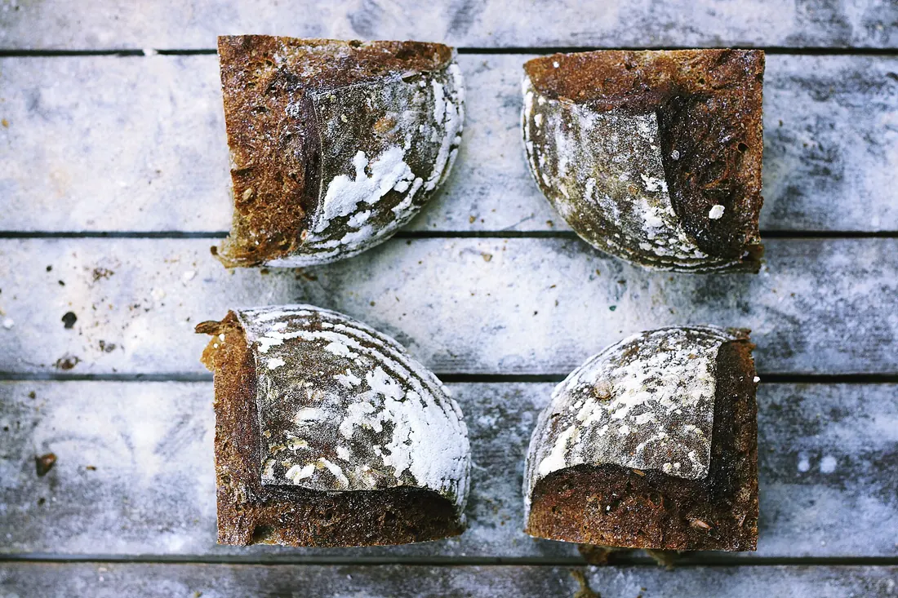

Mix, then leave it alone
Dough is mixed at two in the afternoon and folded four times over three hours. After that, time does the work.
Our story

From the baker
Sam Whitley, baker and owner
“If the bread isn't right at four in the morning, it doesn't go on the shelf. That's the whole rule.”
I started baking bread for the Saturday market, twelve loaves at a time in a friend's restaurant oven after they closed. People kept asking where they could get it on a Tuesday. Eventually the answer was this room on East Main.
We still bake the way we did then. The sourdough is flour, water, salt and a starter that's older than the shop. Every loaf rests overnight, so it's ready when the ovens come on at half past three.
We make a set amount each morning and stop when it's gone. That means some days you'll miss the cardamom buns. It also means nothing on the counter is from yesterday.
There are five of us now: two bakers, two at the counter, and me somewhere in between. If you've got a question about bread, any of us will happily talk your ear off.

The process
There's no shortcut we'd want. Slow fermentation is where the flavour comes from, and why the crust stays crisp for days.
Dough is mixed at two in the afternoon and folded four times over three hours. After that, time does the work.

Shaped loaves rest in their baskets for twelve to fourteen hours. The long, cold proof gives the crumb its tang.

Bread first while the oven is hottest, pastry after. The first loaves are cool enough to slice when the doors open.
Where it comes from
We buy from people we can call on the phone. When something changes, we'll tell you at the counter.
Hard red winter wheat, grown and stone-milled in Oklahoma, for our red wheat loaf. Organic bread flour for everything else.
From a family dairy about an hour north. It's why the croissants taste the way they do.
Roasted in small batches in Oklahoma City and delivered every Monday.